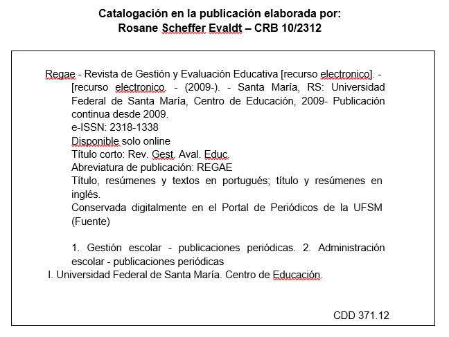

Regae: Revista de Gestão e Avaliação Educacional

 Regae: Revista de Gestão e Avaliação Educacional
Regae: Revista de Gestão e Avaliação Educacional
Publicación de: Universidade Federal de Santa MariaÁrea: HUMAN SCIENCES

Acerca del periódico
Regae: Revista de Gestión y Evaluación Educativa, es mantenida por la Universidad Federal de Santa María – UFSM. Se publica en Brasil desde 2009 y cubre las áreas de administración escolar, gestión escolar, políticas educativas, evaluación educativa y evaluación institucional. Su misión es convertirse en un vehículo de difusión de los estudios en el campo de la educación. El público objetivo está formado por docentes, estudiantes, investigadores y líderes de instituciones educativas. Regae se encuentra alojada en el portal de revistas de la Universidad Federal de Santa María, en la dirección http://periodicos.ufsm.br/regae/index, y se presenta en un formato en línea. El proceso de envío, evaluación, edición y publicación se realiza a través del Sistema de Publicación de Revistas Electrónicas, traducción autorizada del Open Journal Systems – OJS. El título abreviado de la revista, que debe ser utilizado en bibliografías, notas al pie, referencias y leyendas bibliográficas es Regae: Rev. Gest. Aval. Educ. |
Regae se presenta en un formato de publicación continua. |
Regae tiene divulgación en el Youtube – https://www.youtube.com/@regae-revistadegestaoeaval9441/featured – y no Facebook – https://www.facebook.com/revistaregae. |
Todo el contenido de la revista, salvo que se indique lo contrario, está sujeto a una licencia Creative Commons: Atribuição-NãoComercial-SemDerivações 4.0 Internacional - CC BY-NC-ND 4.0. El acceso abierto significa poner a disposición de forma gratuita en Internet, para que los usuarios puedan leer, descargar, copiar, distribuir, imprimir, buscar o hacer referencia al texto completo de los documentos, procesarlos para indexarlos, usarlos como datos para la entrada de programas al software, o utilizarlos para cualquier otro fin lícito, sin barreras financieras, legales o técnicas. |
Tarifas por envío y publicación de textos
No se cobran tarifas por los textos publicados, ni por los sometidos a evaluación, revisión, publicación, distribución o descarga. |
Es obligatorio registrar el número en el Orcid: https://orcid.org/. |
Todos los artículos publicados en Regae reciben un número DOI. |
Declaración de ética y mala praxis de publicación
Dentro de la Regae se priorizan las prácticas de respeto a la conducta ética, siguiendo las recomendaciones del Comité de Ética en Publicaciones - Cope -, las cuales se pueden encontrar en http://publicationethics.org/resources/guidelines. Por lo tanto, los editores se esfuerzan por evitar y prevenir la publicación de artículos en los que se ha producido una mala conducta de investigación; en ningún caso se alienta o se permite que ocurra una mala conducta; se investigará cualquier alegación de conducta de investigación inapropiada; se prevé la publicación de correcciones, erratas, aclaraciones, derecho de réplica, retractaciones y disculpas, cuando sea necesario. |
Los autores son aquellos que contribuyeron, de manera sustancial y directa, al diseño y elaboración del artículo; participó en el análisis e interpretación de datos; participó en la redacción, revisión de versiones, revisión de contenido y aprobación de la versión final; acordaron que son responsables de la exactitud e integridad de todo el trabajo. Se solicita el uso de la taxonomía de funciones de contribuyente - Crédito - para representar las respectivas contribuciones al texto: http://credit.niso.org. |
Responsabilidades de los autores
|
El plagio es el acto de firmar o presentar como su contenido intelectual el trabajo de otra persona o grupo. Se consideran plagio las siguientes actitudes: citar textualmente el trabajo de otra persona, sin citar debidamente la fuente; parafrasear el trabajo de otra persona cambiando algunas de las palabras, o el orden de las palabras, sin citar correctamente la fuente; usar las ideas de otra persona sin referencia al autor; cortar y pegar de internet, sin la debida cita de la fuente. Los proponentes deben garantizar la originalidad de los manuscritos y, en caso de utilizar artículos de otros autores, que sean debidamente citados. |
Conflicto de intereses es la situación en la que los autores tienen intereses capaces de influir en el proceso de elaboración de los manuscritos. Se trata de conflictos de distinta naturaleza -personales, comerciales, políticos, académicos o financieros- a los que cualquiera puede estar sujeto, por lo que, cuando se presenten, los autores deben reconocerlos y revelarlos. |
Los autores deben declarar todas las fuentes de financiación o apoyo –institucional o personal– para la realización del estudio. Se debe identificar el nombre de la institución o persona. |
Cuando sea deseable y pertinente, se recomienda la nominación, en una nota al pie, a las personas que colaboraron con la elaboración del estudio, aunque no cumplan con los criterios de autoría. Los autores son responsables de obtener la autorización de estas personas antes de nombrarlas en sus agradecimientos. También se podrán incluir agradecimientos a instituciones, por el apoyo financiero o logístico para la realización del estudio. Deben evitarse los reconocimientos impersonales. |
La información sobre el autor debe ser informada en el perfil registrado en el sistema de la revista y requerido por el ambiente Seer/OJS. Cabe señalar, en particular, el nombre completo y sin abreviaturas, correo electrónico, filiación institucional; resumen biográfico, número de registro de Orcid. |
|
 |